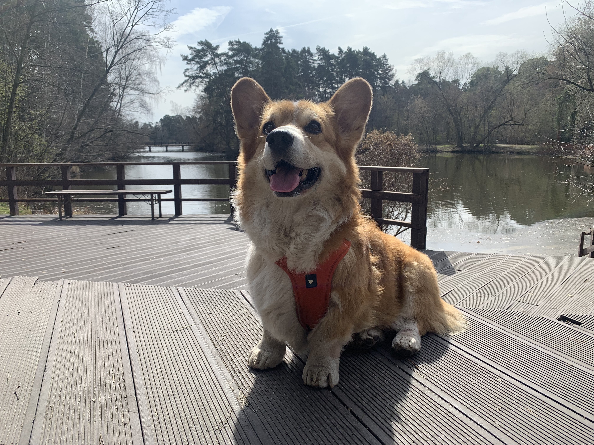
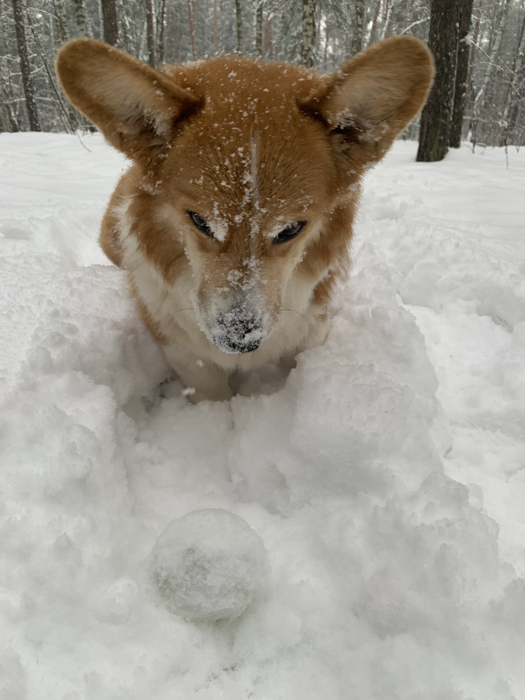

Laif Spring Harry Potter
Описание

Порода -
Welsh Corgi Pembroke
Кобель
Возраст - 11 лет
Кличка по паспорту -
Harry Potter
Кличка в быту - Гаврюша
Натуральный бобтейл (куцехвостый)
Любимое времяприпровождение

Гулять
Есть
Спать на боку
спать кверху лапами
спать распластавшись на животе
Что может быть лучше рыжей, ушастой собаки? - Две рыжих, ушастых собаки!